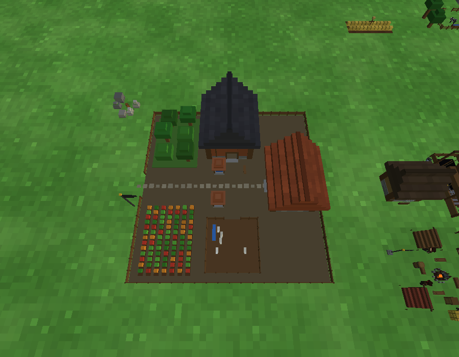
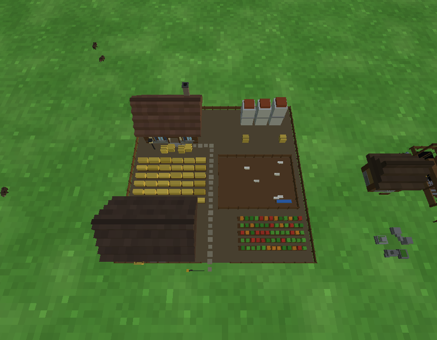
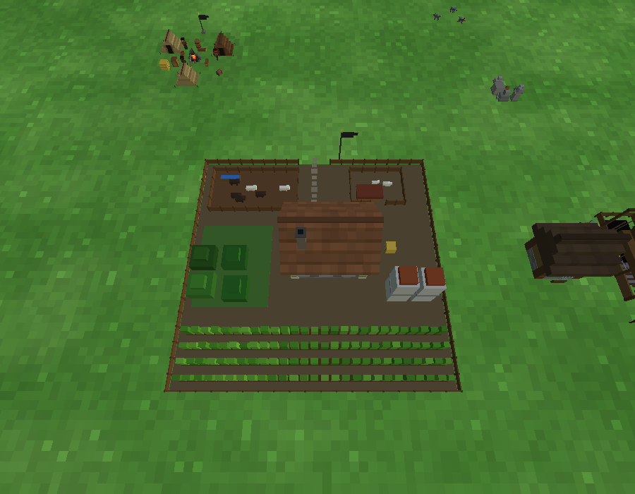
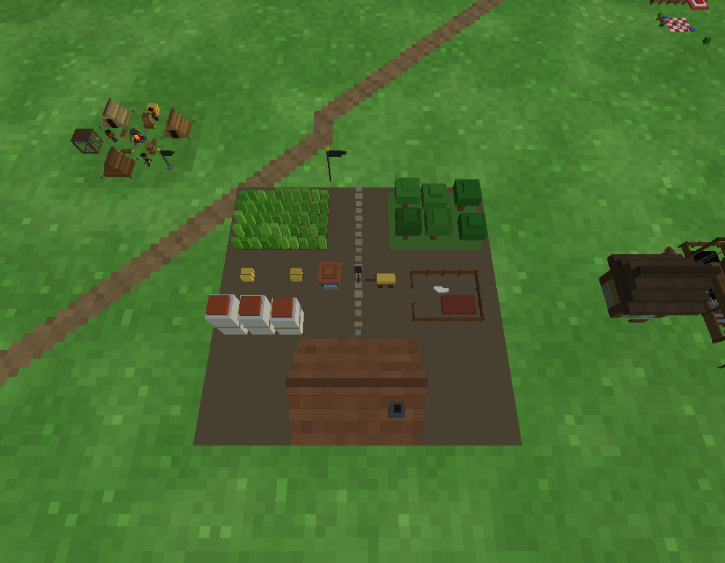
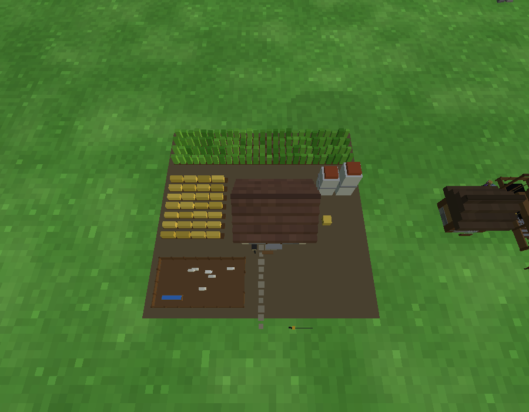
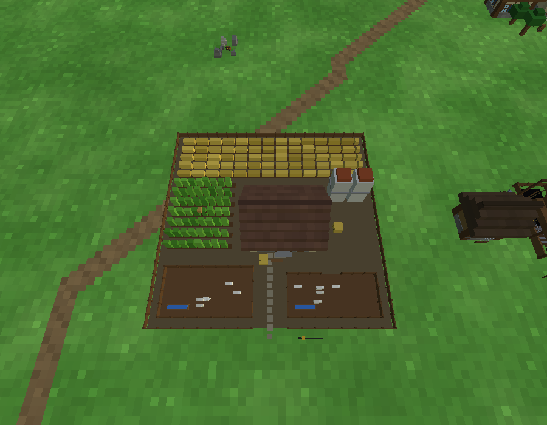
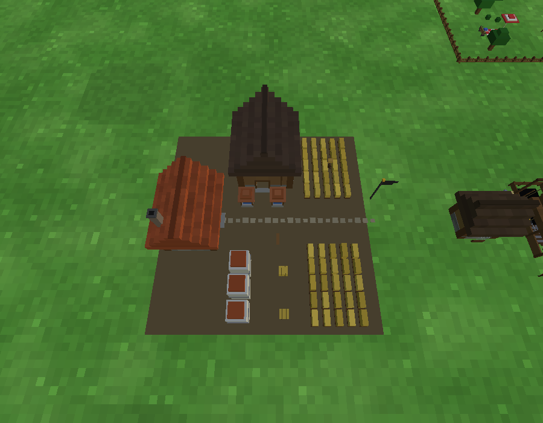
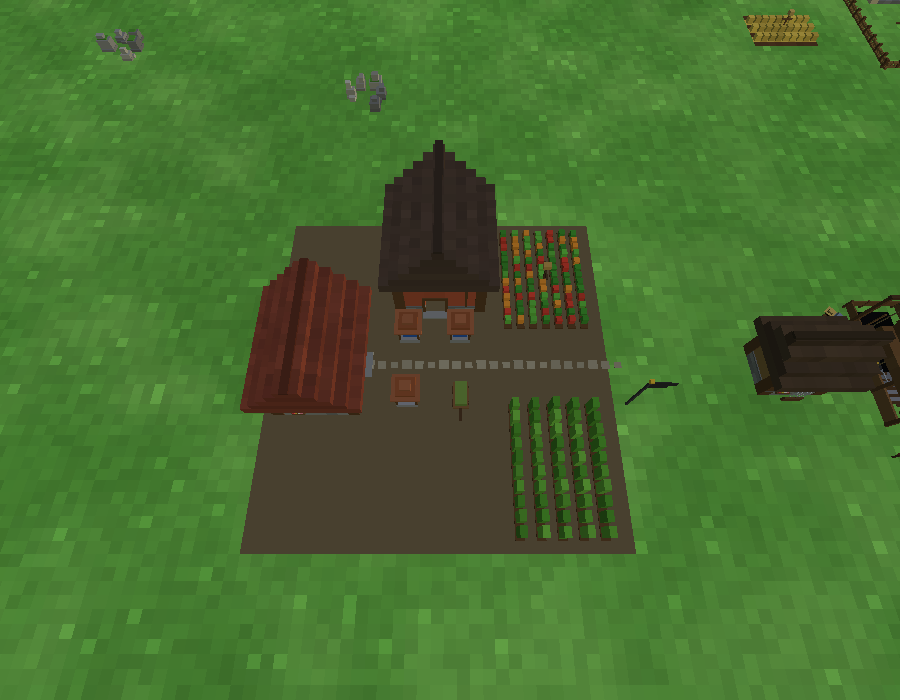

Cada cartão é a mesma receita (fazenda) com uma semente diferente: esqueleto, giro/espelho, peças de cada vaga e enfeites mudam. Cada link abre o mapa manual de POIs com a fazenda lego
(?cenario=pois&lego=1&seed=N; a fazenda é a primeira da grade; tecla N liga o voo). Sem lego=1 a fazenda é a antiga, para comparar (?cenario=pois&seed=N).
Dados: js/modifiers/lego-modifiers.js; montador: js/local/poilego.js. Gerada por cd tests && node lego-galeria.js.

Semente 1
esqueleto patio-fechado, rotação 1
peças: casa, celeiro, curral, pomar, horta

Semente 2
esqueleto curral-grande, rotação 0, espelhada
peças: casa, silos, curral, trigo, horta, celeiro

Semente 3
esqueleto em-ele, rotação 2, espelhada
peças: casa, milho, pomar, silos, curral, galinheiro

Semente 4
esqueleto patio-fechado, rotação 2
peças: casa, galinheiro, silos, pomar, milho

Semente 5
esqueleto em-ele, rotação 0
peças: casa, milho, trigo, silos, curral, nada

Semente 6
esqueleto em-ele, rotação 0
peças: casa, trigo, milho, silos, curral, curral

Semente 7
esqueleto patio-fechado, rotação 3
peças: casa, silos, celeiro, trigo, trigo

Semente 8
esqueleto patio-fechado, rotação 3, espelhada
peças: casa, celeiro, nada, horta, milho